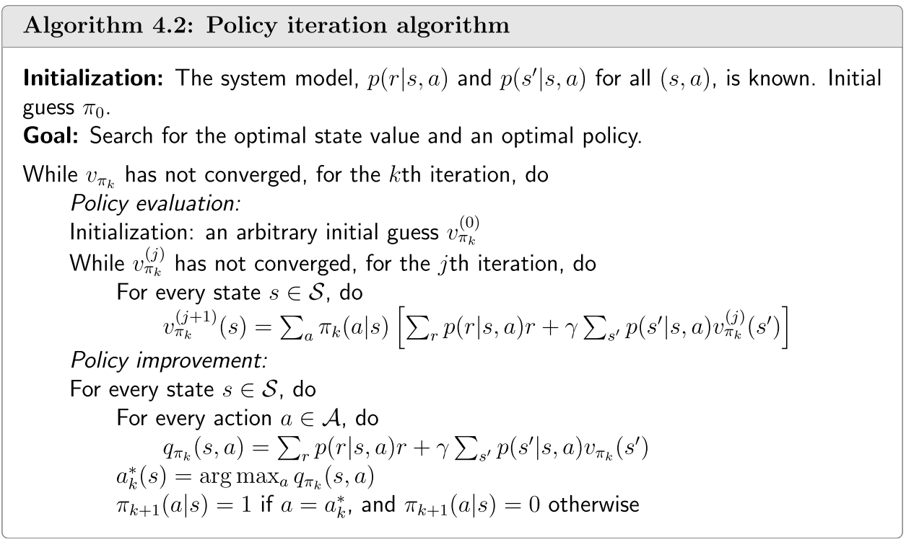
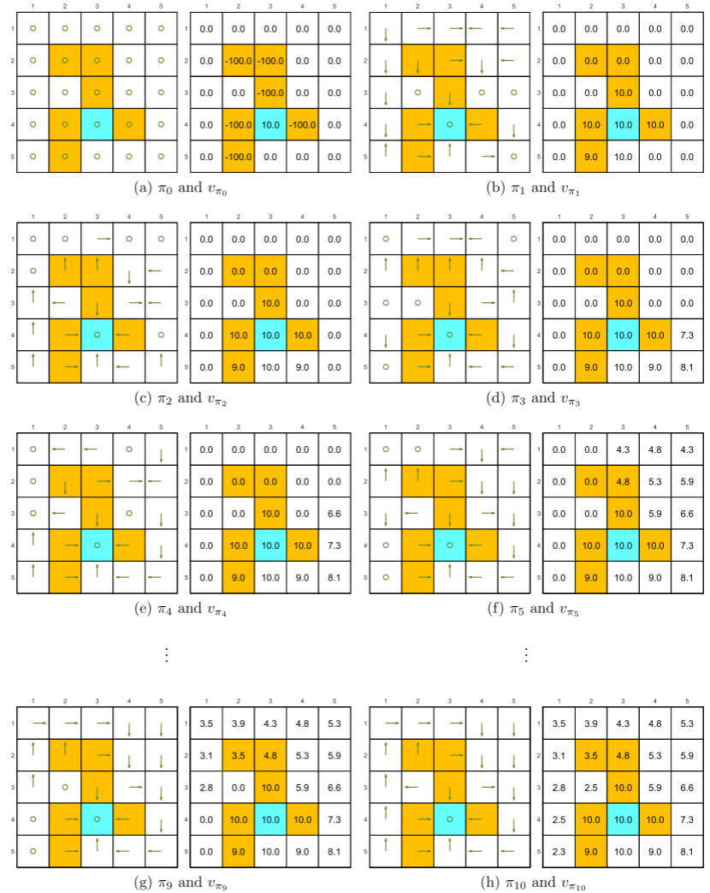

4.2-策略迭代
策略迭代¶
本节介绍另一种重要的算法：策略迭代。与值迭代不同，策略迭代并不是直接求解贝尔曼最优公式。然而，它与值迭代有着密切的关系。策略迭代的思想非常重要，其广泛应用于强化学习算法中。
4.2.1 算法分析¶
策略迭代是一种迭代算法。每次迭代包含两个步骤。
-
第一步是策略评估(policy evaluation)步骤。顾名思义，这一步通过计算相应的状态值来评估给定的策略。即求解以下贝尔曼方程：
\[v_{\pi_k}=r_{\pi_k}+\gamma P_{\pi_k}v_{\pi_k},\tag{4.3}\]其中，\(\pi_k\)是上一次迭代中得到的策略，\(v_{\pi_k}\)是待计算的状态值。\(r_{\pi_k}\)和\(P_{\pi_k}\)的值可从系统模型中获得。
-
第二个是策略改进(policy improvement)步骤。顾名思义，这一步用于改进策略。具体而言，一旦在第一步中计算出\(v_{\pi_k}\)，就可以得到一个新的策略\(\pi_{k+1}\)，如下所示：
\[\pi_{k+1}=\arg\max_\pi(r_\pi+\gamma P_\pi v_{\pi_k}).\]
在上述算法描述之后，自然会引出三个问题。
- 在策略评估步骤中，如何求解状态值 \(v_{\pi_k}\)？
- 在策略改进步骤中，为什么新策略\(π_{k+1}\)比\(\pi_k\)更优？
- 为什么该算法最终能够收敛到最优策略？
接下来，我们将逐一回答这些问题。
Q1: 在策略评估步骤中，如何求解状态值 \(v_{\pi_k}\)？¶
我们在第\(2\)章中介绍了两种求解式\((4.3)\)中的贝尔曼公式的方法。接下来我们将简要回顾这两种方法。第一种方法是封闭式解：\(v_{\pi_k}=(I-\gamma P_{\pi_k})^{-1}r_{\pi_k}\)。这种封闭形式的解在理论分析中很有用，但由于计算逆矩阵，因此实现起来效率较低。第二种方法是一种易于实现的迭代算法：
其中，\(v^{(j)}_{π_k}\)表示\(v_{\pi_k}\)的第\(j\)次估计。从任意初始猜测\(v^{(0)}_{\pi_k}\)开始，可以保证当\(j \rightarrow \infty\)时，\(v^{(j)}_{\pi_k}\rightarrow v_{\pi_k}\)。具体细节请参见第\(2.7\)节。
有趣的是，策略迭代是一个迭代算法，其中包含了另一个迭代算法\((4.4)\)，该算法在策略评估步骤中执行。从理论上讲，这个包含的迭代算法需要无限次的步骤(即 \(j \to \infty\))才能收敛到真实的状态值 \(v_{\pi_k}\)。然而，这是不可能实现的。在实际操作中，迭代过程会在满足某个标准时终止。例如，终止标准可以是 \(\| v_{\pi_k}^{(j+1)} - v_{\pi_k}^{(j)}\|\)小于预设的阈值，或者\(j\)超过预设的值。如果我们不进行无限次的迭代，我们只能得到一个不精确的\(v_{\pi_k}\)值，这个值将在随后的策略改进步骤中使用。这会造成问题吗？答案是否定的。原因将在我们后面介绍的截断策略迭代算法(\(4.3\)节)中变得清晰。
Note
注: 这个地方需要重点理解一下这两个迭代之间的区别，避免后面弄混。
Q2: 在策略改进步骤中，为什么新策略\(π_{k+1}\)比\(\pi_k\)更优？¶
策略改进步骤可以改进给定的策略，如下所示。
Info
引理4.1(策略改进). 若 \(\pi_{k+1} = \arg\max_\pi(r_\pi + \gamma P_\pi v_\pi^k)\)，则\(v_{\pi_{k+1}} \geq v_{\pi_k}\)。
这里，\(v_{\pi_{k+1}} \geq v_{\pi_k}\)表示对于所有状态\(s\)，有\(v_{\pi_{k+1}}(s) ≥ v_{\pi_k}(s)\)。该引理的证明见方框 4.1。
Q3: 为什么策略迭代算法最终能够找到最优策略？¶
策略迭代算法生成两个序列。第一个是策略序列：\(\{\pi_0,\pi_1,...,\pi_k, ...\}\)。第二个是状态值序列：\(\{v_{\pi_0}, v_{\pi_1},...,v_{\pi_k},...\}\)。假设\(v^*\)是最佳状态值，则对于所有\(k\)，有\(v_{\pi_k}\leq v^*\)。由于根据引理4.1，策略不断改进，因此我们知道
由于\(v_{\pi_k}\)是非递减的，并且始终被\(v^∗\)上界所限制，因此根据单调收敛定理[12]，当\(k\rightarrow\infty\) 时，\(v_{\pi_k}\)收敛到一个常数值，记为 \(v_\infty\)。以下分析表明\(v_\infty=v^*\)。
Info
定理4.1. (策略迭代的收敛性)由策略迭代算法生成的状态值序列\(\{v_{\pi_k}\}_{k=0}^{\infty}\)收敛到最优状态值\(v^∗\)。因此，策略序列\(\{\pi_k\}^\infty_{k=0}\)收敛到一个最优策略。
该定理的证明见方框\(4.2\)。该证明不仅表明了策略迭代算法的收敛性，还揭示了策略迭代算法与值迭代算法之间的关系。从直观上讲，如果两种算法均从相同的初始猜测开始，由于策略评估步骤中嵌入了额外的迭代，策略迭代的收敛速度将比值迭代更快。当我们将在第\(4.3\)节中介绍截断策略迭代算法时，这一点将变得更加清晰。
4.2.2 逐元素形式与实现¶
为了实现策略迭代算法，我们需要研究其逐元素形式。
-
首先，策略评估步骤通过\((4.4)\)中的迭代算法来求解\(v_{\pi_k} = r_{\pi_k} + \gamma P_{\pi_k}v_{\pi_k}\)中的\(v_{\pi_k}\)，该算法的逐元素形式为
\[v_{\pi_{k}}^{(j+1)}(s)=\sum_{a}\pi_{k}(a|s)\left(\sum_{r}p(r|s,a)r+\gamma\sum_{s^{\prime}}p(s^{\prime}|s,a)v_{\pi_{k}}^{(j)}(s^{\prime})\right),\quad s\in\mathcal{S},\]在这里\(j=0,1,2,...\)
当\(j\to\infty\)，\(j\)足够大或\(\|v_{\pi_{k}}^{(j+1)}-v_{\pi_{k}}^{(j)}\|\)足够小时时停止迭代。
-
其次，策略改进步骤求解\(\pi_{k+1} = \arg \max_\pi(r_\pi + \gamma P_\pi v_{\pi_k})\)。该方程的元素形式为
\[\pi_{k+1}(s)=\arg\max_{\pi}\sum_{a}\pi(a|s)\underbrace{\left(\sum_{r}p(r|s,a)r+\gamma\sum_{s^{\prime}}p(s^{\prime}|s,a)v_{\pi_{k}}(s^{\prime})\right)}_{q_{\pi_{k}}(s,a)},\quad s\in\mathcal{S},\]其中 \(q_{\pi_k}(s,a)\)是策略\(\pi_k\)下的行动值。令\(a^*_k(s) =\arg\max_a q_{\pi_k}(s,a)\)。那么，Greedy最优策略为
\[\pi_{k+1}(a|s)=\left\{\begin{array}{ll}1,&a=a_k^*(s),\\0,&a\neq a_k^*(s).\end{array}\right.\]
具体实现细节在算法\(4.2\)中总结。

算法\(4.2\): 策略迭代算法的伪代码
4.2.3 示例¶
一个简单的例子¶
考虑图\(4.3\)中所示的一个简单示例。有两个状态，每个状态有三种可能的动作：\(\mathcal{A} = \{a_l, a_0, a_r\}\)。这三种动作分别表示向左移动、保持不变和向右移动。奖励设置为\(r_{boundary} = −1\)和\(r_{target} = 1\)。折现率为\(\gamma = 0.9\)。
图4.3: 一个用于说明策略迭代算法实现的示例。
接下来，我们逐步介绍策略迭代算法的实现过程。当\(k = 0\)时，我们从图\(4.3(a)\)所示的初始策略开始。该策略并不理想，因为它没有朝着目标区域移动。接下来，我们将展示如何应用策略迭代算法来获得最优策略。
-
首先，在策略评估步骤中，我们需要求解贝尔曼公式:
\[\begin{aligned}v_{\pi_0}(s_1) &= -1 + \gamma v_{\pi_0}(s_1), \\v_{\pi_0}(s_2) &= 0 + \gamma v_{\pi_0}(s_1).\end{aligned}\]由于该公式很简单，可以手动求解得出：
\[v_{\pi_0}(s_1) = -10, \\v_{\pi_0}(s_2)= -9.\]在实践中，该方程可以通过\((4.4)\)中的迭代算法求解。例如，选择初始状态值为\(v_{\pi_0}^{(0)}(s_1) = v_{\pi_0}^{(0)}(s_2) = 0.\)。根据(4.4)可知，
\[\begin{cases}v_{\pi_0}^{(1)}(s_1) = -1 + \gamma v_{\pi_0}^{(0)}(s_1) = -1, \\ v_{\pi_0}^{(1)}(s_2) = 0 + \gamma v_{\pi_0}^{(0)}(s_1) = 0, \end{cases}\]\[\begin{cases}v_{\pi_0}^{(2)}(s_1) = -1 + \gamma v_{\pi_0}^{(1)}(s_1) = -1.9, \\ v_{\pi_0}^{(2)}(s_2) = 0 + \gamma v_{\pi_0}^{(1)}(s_1) = -0.9, \end{cases}\]\[\begin{cases}v_{\pi_0}^{(3)}(s_1) = -1 + \gamma v_{\pi_0}^{(2)}(s_1) = -2.71, \\ v_{\pi_0}^{(3)}(s_2) = 0 + \gamma v_{\pi_0}^{(2)}(s_1) = -1.71.\end{cases}\]随着更多次迭代，我们可以看到趋势：随着\(j\)的增加，有\(v_{\pi_{0}}^{(j)}(s_{1})\to v_{\pi_{0}}(s_{1})=-10\),\(v_{\pi_{0}}^{(j)}(s_{2})\to v_{\pi_{0}}(s_{2})=-9\)
-
其次，在策略改进步骤中，关键是要为每个状态-动作对计算\(q_{\pi_0}(s,a)\)。以下\(q\)表可以用来演示这一过程：
表\(4.4\): 图\(4.3\)中示例的\(q_{\pi_k}(s,a)\)的表达式。
将上一步策略评估中得到的\(v_{\pi_0}(s_1) = −10\)和\(v_{\pi_0}(s_2) = −9\) 代入表\(4.4\)，可得到表\(4.5\)。
表\(4.5\): 当\(k=0\)时，\(q_{\pi_k}(s,a)\)的值。
通过寻求\(q_{\pi_0}\)的最大值，可以得到改进后的策略\(\pi_1\)，如下所示：
\[\pi_1(a_r|s_1)=1,\quad\pi_1(a_0|s_2)=1.\]上述过程表明，在这个简单示例中，一次迭代就足以找到最优策略。对于更复杂的示例，则需要更多的迭代。
一个复杂的例子¶
接下来，我们使用图\(4.4\)所示的一个更复杂的例子来演示策略迭代算法。奖励设置为：\(r_{boundary} = −1，r_{forbidden} = −10，r_{target} = 1\)。折现率为\(\gamma = 0.9\)。当从一个随机初始策略(图\(4.4(a)\))开始时，策略迭代算法可以收敛到最优策略(图\(4.4(h)\))。

图\(4.4\): 策略迭代算法生成的策略的演化过程。
在迭代过程中观察到两种有趣的现象。
-
首先，如果我们观察政策的演变过程，会发现一个有趣的规律：那些靠近目标区域的状态会比远离目标区域的状态更早找到最优策略。只有当靠近目标区域的状态能够率先找到通往目标的路径时，远离目标区域的状态才能通过经过这些靠近目标的状态来找到通往目标的路径。
-
其次，状态值的空间分布呈现出一种有趣的模式：距离目标越近的状态，其状态值越大。这种模式的原因在于，从较远状态开始的智能体需要经过许多步才能获得正向奖励。而这种奖励会被严重折现，因此相对较小。